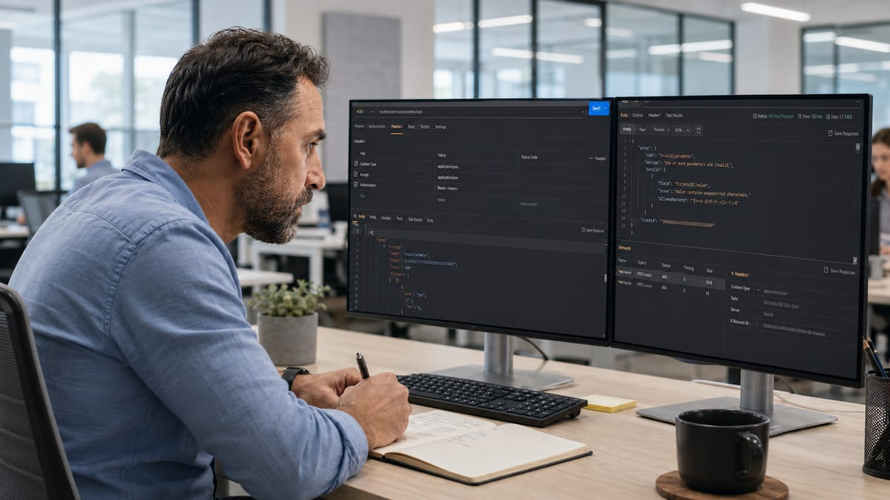
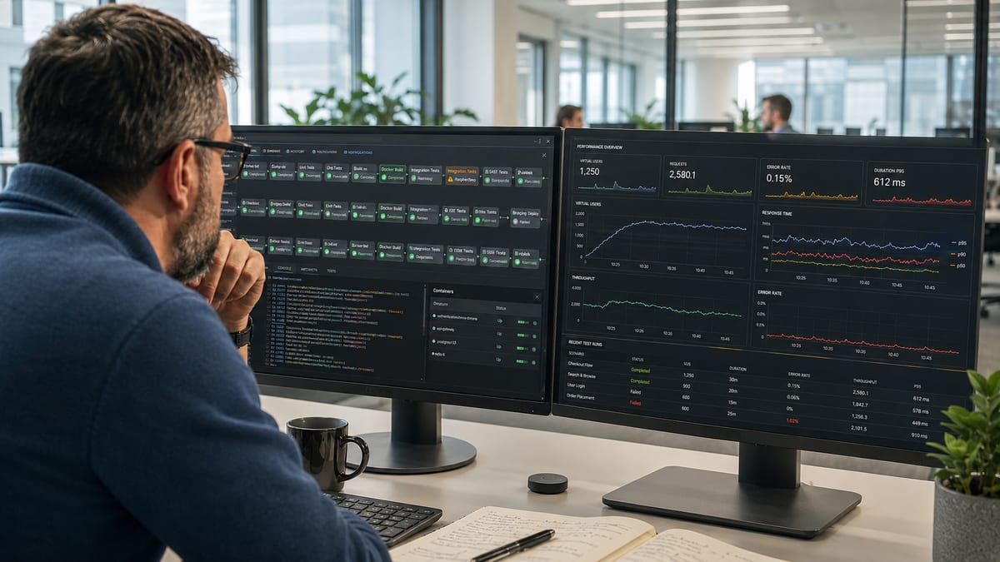

Every few months someone asks, usually half joking, whether automation is going to replace manual testing entirely. It won't, and the question itself is the wrong one. I've spent nine years moving between the two, from writing Cucumber feature files by hand at Computershare to building performance frameworks from scratch at Currencycloud, and the pattern is always the same: manual and automation aren't competing for the same job. Most of the pain I've seen on real projects comes from using one where the other was needed.
What manual testing is actually for
Manual testing earns its keep anywhere judgment matters more than repetition. A regression suite will happily go green while a checkout flow feels subtly wrong to an actual human. It won't tell you that. A person clicking through it will.
Postman is where this shows up most clearly for me day to day. Before anything gets codified into an automated check, I'm usually in Postman poking at an API by hand, sending malformed input, missing headers, values just outside the expected range, watching what comes back. That's exploratory work, not a script, and it's exactly how I've found error responses that leaked raw internals instead of explaining the fault to whoever hit them. No automated suite was going to stumble onto that on its own. It took someone deliberately trying to break the thing.

It's also the right call early, before a feature has settled. And it's the only sane option for genuinely one off scenarios: a specific migration, a one time config check, something you'll verify once and never touch again. I once root-caused a trading tenor calculation defect that let weekend spot trades through undetected, and that started as manual digging through an odd case, not a scripted check that happened to exist.
What automation is actually for
Automation earns its keep anywhere the same check needs to run the same way, over and over, without anyone having to remember to do it. At Computershare that meant BDD feature files and regression suites running through Jenkins on every build, proving yesterday's fix hadn't quietly broken something three modules away. A human re-clicking the same 40 steps by hand isn't testing at that point, it's just tedium with a chance of missing something on the fifth run.
Performance testing is the case where automation isn't just faster, it's the only option. I built our performance framework at Currencycloud from scratch, starting with Gatling and later moving to K6, because there's no manual version of simulating realistic concurrent load. You either script it or you don't test it at all. Selenium and Docker did the same job for UI regression and for keeping test environments consistent and disposable rather than "works on my machine." And Datadog closes the loop in production: automation and monitoring together catch what a testing pass, manual or automated, never got the chance to see before it shipped.

The actual decision
The question that matters isn't "manual or automated," it's how often this runs and how stable what it's checking actually is. Something you'll run once, on a flow still in flux, stays manual, the way I still work API edge cases in Postman before anything's worth scripting. Something that runs on every build, against a flow that's settled, like the regression suites in Jenkins or the load profiles in K6, gets automated.
These days I also lean on Claude and GitHub Copilot to move faster through both, drafting test scaffolding, reviewing PRs, but they haven't changed the underlying split. They're a faster way to do the same two jobs, not a third option. The best setups I've built don't pick a side. Automation carries the repeatable load so I've got the time left over for the exploratory work only a person can actually do.